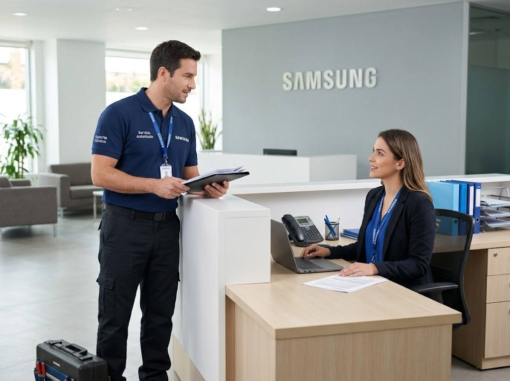

Reparación de lavadoras Samsung en Condado del Rey
Servicio técnico Samsung a domicilio en Condado del Rey para lavadoras: diagnóstico en el sitio, costo claro antes de reparar y garantía en la pieza y la mano de obra.

Técnico de lavadoras Samsung en Condado del Rey
Aquí hay muchas casas y residenciales con lavandería o terraza. Revisamos también las condiciones del lugar donde está el equipo: ventilación, humedad, tomacorrientes y desagües.
En casas, las variaciones de voltaje y la humedad de las áreas externas son causas frecuentes de fallas; te recomendamos protegerlos y te explicamos cómo.
¿Cuánto cuesta reparar una lavadora Samsung en Condado del Rey?
Depende de la falla y de la pieza. Te damos el costo de la visita antes de ir y el de la reparación antes de empezar el trabajo, con garantía sobre la pieza y la mano de obra.
Lavadoras Samsung con motor inverter, EcoBubble y AddWash
Conocemos las líneas más usadas de Samsung: lavadoras con motor inverter Digital, tecnología de burbujas, puerta AddWash para agregar ropa en pleno ciclo y lavadoras con control digital. Revisamos tarjeta electrónica, bomba de desagüe, válvula de entrada de agua, seguro de la puerta, amortiguadores y rodamientos.
Fallas de lavadoras Samsung que atendemos en Condado del Rey
- No centrifuga o centrifuga con mucho ruido: Carga desbalanceada, amortiguadores o rodamientos desgastados, o problema del motor.
- No desagua (queda agua en la tina): Filtro de desagüe tapado, bomba de desagüe o manguera obstruida.
- No llena de agua o llena muy lento: Llaves cerradas, malla de la manguera tapada, válvula de entrada o sensor de nivel.
- Gotea o se sale el agua: Mangueras flojas, empaque de la puerta (en carga frontal), bomba o tina.
- La puerta no abre o no cierra: Seguro de la puerta (cerradura) o bisagra desgastada.
Consejo de mantenimiento
Deja la puerta o la tapa abierta después de lavar para que se seque.
Preguntas frecuentes en Condado del Rey
¿Reparan lavadoras Samsung en Condado del Rey?
Sí. Damos servicio técnico a domicilio de lavadoras Samsung en Condado del Rey (Ciudad de Panamá). Escríbenos por WhatsApp con el modelo y la falla y te confirmamos la visita.
¿Cuánto tardan en llegar a Condado del Rey?
Coordinamos visitas en 24 a 48 horas en la mayoría de las zonas, según disponibilidad.
¿Cuánto cuesta el servicio técnico de la lavadora Samsung en Condado del Rey?
Te confirmamos el costo de la visita antes de ir y el de la reparación antes de empezar, según la falla y el modelo.
Guías de lavadoras Samsung
Otros equipos Samsung en Condado del Rey
Lavadoras Samsung en zonas cercanas
Búsquedas relacionadas en Condado del Rey
¿Tu lavadora Samsung falla en Condado del Rey?
Escríbenos por WhatsApp con el equipo, el modelo y la falla. Te confirmamos disponibilidad para tu zona en minutos.